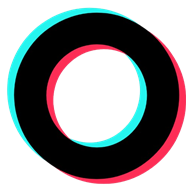

VODOS גרסה 2.0
פיד של סרטונים קצרים בגלילה אנכית. באתר, וגם על נגן אנדרואיד בלי אינטרנט: המחשב מוריד את הסרטונים ומעתיק אותם לנגן בכבל.
.png) Xnet
Xnet
אתרים, כלים ותוספים שבניתי ואני ממשיך להפעיל בעצמי. לכל אחד יש עמוד עם הסבר מלא.
לחנות האפליקציות
פיד של סרטונים קצרים בגלילה אנכית. באתר, וגם על נגן אנדרואיד בלי אינטרנט: המחשב מוריד את הסרטונים ומעתיק אותם לנגן בכבל.

פלטפורמה שיתופית למטיילים: מעיינות, מסלולים ואתרי בילוי בישראל במקום אחד, עם ביקורות מהשטח.

לוח קהילתי של אתרים נפוצים שפתוחים תחת נטפרי. כל משתמש יכול להוסיף אתר, והרשימה גדלה יחד עם הקהילה.

מביא את הסטורי מוואטסאפ ומאינסטגרם ישירות לתיבת המייל, פתוח בכל הסינונים.
גישה למערכת הקולית ישירות מהמחשב: שליחה וקבלה של הודעות שמתעדכנות כל הזמן, עם אנשי קשר.
העדכונים מהערוצים שאתם אוהבים לפי הסדר, בלי אלגוריתם ובלי המלצות. יש גם גרסה שעובדת ברשתות מסוננות.
פיד מאוחד מכמה ערוצי חדשות בסרגל הצד של הדפדפן, עם טאב לסרטונים קצרים.
עורך קליפים חינמי בעברית: וידאו, תמונות, שמע וטקסט, כתוביות עם Gemini ומעברים. הכל רץ במחשב שלכם, בלי להעלות מדיה לשרת.
עדכונים, הכרזות ומאחורי הקלעים על כל מה שאני בונה.